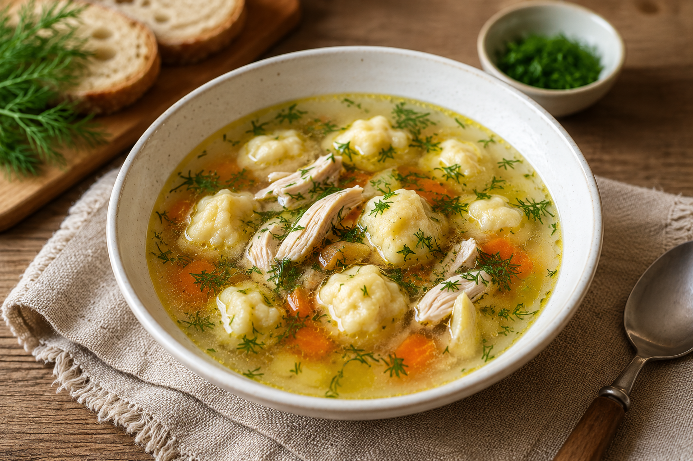

Суп
Куриный суп с клёцками
Домашний куриный суп с прозрачным бульоном, мягкими клёцками и свежей зеленью.
Ингредиенты
Для супа
- Курица (бедро, голень или грудка) — 500–700 г
- Картофель — 4–5 шт.
- Морковь — 1 шт.
- Лук репчатый — 1 шт.
- Лавровый лист — 2 шт.
- Вода — 2,5–3 л
- Растительное масло — 1 ст. л.
- Соль — по вкусу
- Чёрный перец — по вкусу
- Зелень (укроп, петрушка) — по вкусу
Для клёцок
- Яйцо — 1 шт.
- Мука — 5–7 ст. л. (до густого теста)
- Молоко или вода — 2 ст. л.
- Соль для клёцок — щепотка
Приготовление
Курицу залить холодной водой, довести до кипения и снять пену. Добавить целую очищенную луковицу и варить на небольшом огне 30–40 минут.
Достать курицу и луковицу. Лук удалить. Мясо отделить от костей и вернуть в бульон.
Картофель очистить, нарезать кубиками, добавить в бульон и варить 10 минут.
Морковь натереть на крупной тёрке и слегка обжарить на растительном масле 4–5 минут на среднем огне до мягкости. Переложить в суп. Для более лёгкого варианта морковь можно добавить сырой.
Клёцки
Яйцо слегка взбить с солью, добавить молоко или воду и постепенно вмешать муку. Тесто должно получиться густым и тягучим.
Двумя чайными ложками опускать небольшие порции теста в кипящий суп. После всплытия варить ещё 5–7 минут.
Добавить лавровый лист, чёрный перец и зелень. Снять суп с огня и дать настояться 10 минут.
Хитрости
- Не делайте клёцки слишком крупными: при варке они увеличиваются примерно вдвое.
- Если добавить в тесто немного рубленого укропа, клёцки будут ароматнее.
- Для более нежного вкуса используйте молоко вместо воды.
- Чтобы бульон оставался прозрачным, варите его на небольшом огне и своевременно снимайте пену.
С чем подавать
- 🥖 Чесночные гренки.
- 🍞 Свежий хлеб или багет.
- 🧈 Хлеб с маслом.
- 🌿 Свежий укроп или петрушка.
- 🥄 Сметана.
Изюминка
Смешать 3 ст. л. сметаны, 1 зубчик чеснока и немного мелко нарезанного укропа. Подавать соус отдельно, чтобы каждый мог добавить его в тарелку по вкусу.
Что приготовить заранее
- Сварить куриный бульон.
- Разобрать курицу на кусочки.
- Очистить и нарезать овощи.
Тесто для клёцок лучше готовить непосредственно перед варкой.
Пищевая ценность
Ориентировочно на 100 г готового блюда: